فصل هشتم — از «اطلاعات تصویر» تا فشردهسازی واقعی در وب#
دامنه این جزوه: تمرکز ما بر بخش «اندازهگیری اطلاعات تصویر» از فصل هشتم کتاب Digital Image Processing نوشتهٔ گنزالز و وودز، یک نمونه کامل از کدگذاری هافمن و سپس یک قالب کاربردی معاصر به نام WebP است. در این نسخه قرار نیست دانشجو فهرست بلند روشهای فشردهسازی، کدهای گوناگون و واترمارکینگ را حفظ کند. هدف، فهم سازوکار اصلی است. [منبع کتابی S1]
یک تصویر روی تلفن همراه یا سایت آموزشی، در نهایت به یک رشته از صفر و یک تبدیل میشود. اما چرا دو تصویر با اندازهٔ یکسان ممکن است حجم فایلهای بسیار متفاوتی داشته باشند؟ و آیا «کوچکتر شدن فایل» یعنی بخشی از تصویر حتماً حذف شده است؟
در این فصل به این دو سؤال پاسخ میدهیم و در پایان، خودمان با چند خط کد یک تصویر را فشرده و بازیابی میکنیم.

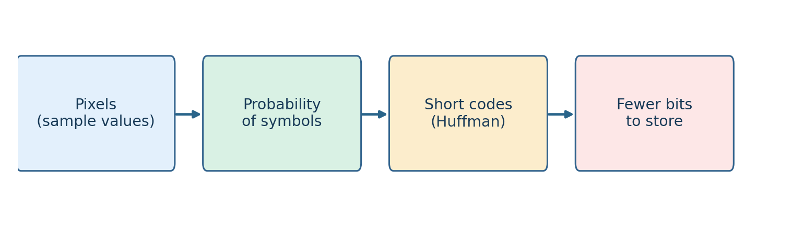
Fig. 284 مسیر یادگیری: از فراوانی شدتهای تصویر، مقدار اطلاعات متوسط را به دست میآوریم؛ سپس آن را برای طراحی کدهای کوتاه و درک فشردهسازی فایلهای واقعی به کار میبریم. این شکل برای جزوه از نو تولید شده است.#
اهداف یادگیری#
پس از پایان فصل باید بتوانید به زبان خودتان توضیح دهید:
چرا تکرار یک مقدار، پیشبینی آن را آسانتر میکند و این موضوع چه ارتباطی با فشردهسازی دارد؛
«آنتروپی» دقیقاً میانگین چه چیزی است و واحد آن چیست؛
تفاوت آنتروپی پیکسلی، طول متوسط کد، حجم واقعی فایل و کیفیت بازسازی چیست؛
چگونه یک درخت هافمن از فراوانی نمادها ساخته میشود و چرا بازسازی آن بدون خطا است؛
چرا عکسهایی با هیستوگرام یکسان ممکن است حجم فایل متفاوتی داشته باشند؛
تفاوت فشردهسازی بدون اتلاف و با اتلاف در چیست؛
چرا WebP برای تصاویر امروزی وب انتخاب مهمی است و پارامتر
qualityچه میکند؛چگونه با Python اندازه فایل، خطای بازیابی و نسبت فشردهسازی را بررسی کنید.
۸.۱ — چرا به فشردهسازی احتیاج داریم؟#
تصویر خاکستری با ابعاد \(1000\times1000\) را در نظر بگیرید. اگر هر پیکسل را با ۸ بیت نگه داریم، برای ذخیرهٔ فقط شدت پیکسلها به این مقدار نیاز است:
تفسیر: اندازه دادهٔ خام تقریباً یک مگابایت دهدهی است؛ اما فایل PNG یا WebP همان تصویر الزاماً همین حجم را ندارد. قالب فایل میتواند اطلاعات تکراری را حذف کند و در عین حال برای بازکردن فایل، سرآیند و سایر اطلاعات کمکی ذخیره کند.
یک تصویر کاملاً سفید یکمیلیون پیکسل دارد، ولی همهٔ پیکسلها شبیه هم هستند. لازم نیست مقدار «۲۵۵» را یکمیلیون بار به شیوهٔ خام بنویسیم. میتوانیم یک بار مقدار و سپس نحوه تکرار آن را توصیف کنیم. در مقابل، تصویری که پیکسلهایش دائماً و بدون نظم آشکار تغییر میکنند، معمولاً سختتر فشرده میشود.
سه نوع سؤال متفاوت:
چه مقدار اطلاعات آماری در شدتهای تصویر هست؟ این سؤال ما را به آنتروپی میرساند.
آن اطلاعات را با چند بیت کدگذاری میکنیم؟ این سؤال دربارهٔ هافمن و روشهای مشابه است.
فایل نهایی چند بایت است و آیا تصویر بازسازیشده دقیقاً همان ورودی است؟ این سؤال دربارهٔ قالب فایل، سرآیند و اتلاف اطلاعات است.
تا پایان این فصل این سه سؤال را از هم جدا نگه دارید.
۸.۲ — Measuring Image Information: یک پیکسل چقدر غافلگیرمان میکند؟#
۸.۲.۱ — اطلاعات، به زبان ساده#
فرض کنید در یک تصویر تقریباً تمام پیکسلها سیاهاند. اگر بگوییم «پیکسل بعدی هم سیاه است»، خبر مهمی ندادهایم، چون احتمال آن زیاد است. اما اگر در همان تصویر یک پیکسل سفیدِ بسیار نادر دیده شود، این رویداد غیرمنتظرهتر است.
در نظریه اطلاعات، رویداد کماحتمال اطلاعات بیشتری منتقل میکند. برای رویدادی با احتمال \(p\)، یک تعریف استاندارد از مقدار اطلاعات آن چنین است:
\(a\) میتواند یک مقدار شدت پیکسل، مثلاً ۸۵، باشد.
\(p(a)\) احتمال مشاهده آن مقدار در تصویر است.
واحد \(I\) برابر بیت است.
مثلاً اگر احتمال یک مقدار \(1/2\) باشد، مشاهده آن \(1\) بیت اطلاعات دارد؛ اگر احتمال آن \(1/8\) باشد، \(3\) بیت اطلاعات دارد. این رابطه به این معنا نیست که فایل حتماً به ترتیب یک یا سه بیت برای هر بار وقوع آن مصرف میکند؛ این فقط مقدار اطلاعات نظری رویداد است.
احتمال رویداد |
اطلاعات یک رخداد |
برداشت ساده |
|---|---|---|
\(1\) |
\(0\) بیت |
کاملاً قابل پیشبینی |
\(1/2\) |
\(1\) بیت |
دو حالت هماحتمال |
\(1/4\) |
\(2\) بیت |
نسبتاً کماحتمال |
\(1/8\) |
\(3\) بیت |
رویدادی نادرتر |
۸.۲.۲ — از اطلاعات یک رخداد به آنتروپی کل تصویر#
تصویر از میلیونها پیکسل تشکیل میشود؛ بهجای اینکه اطلاعات تکتک رویدادها را جداگانه بررسی کنیم، متوسط مقدار اطلاعات پیکسلها را محاسبه میکنیم. این متوسط آنتروپی است:
در این رابطه:
\(L\) تعداد سطوح شدت در الفبای تصویر است؛
\(r_k\) شدت شمارهٔ \(k\) است؛
\(p(r_k)\) احتمال این شدت است؛
\(H\) آنتروپیِ توزیع شدتها، با واحد بیت بر پیکسل است.
اگر \(p(r_k)=0\) باشد، سهم آن شدت را صفر در نظر میگیریم؛ چون \(\lim_{p\to0^+}p\log_2p=0\).
چگونه احتمال را به دست بیاوریم؟ اگر تصویر \(M\times N\) پیکسل دارد و مقدار \(r_k\) دقیقاً \(n_k\) بار دیده شود:
این همان هیستوگرام نرمالشدهای است که در فصل سوم آموختیم. به این ترتیب موضوع تازهای از هیچ شروع نشده است؛ هیستوگرام فصل سوم، ورودی محاسبه آنتروپی فصل هشتم است.

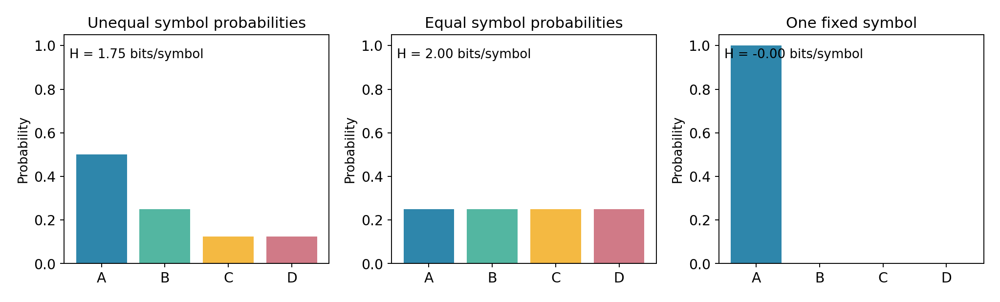
Fig. 285 سه حالت با چهار نماد ممکن: در تصویر چپ، احتمال نمادها برابر نیست و آنتروپی کمتر از دو بیت است؛ در حالت میانی، چهار نماد هماحتمالاند و آنتروپی دو بیت است؛ در حالت راست، تنها یک نماد دیده میشود و آنتروپی صفر است.#
۸.۲.۳ — مثال عددی: تنها با چهار شدت#
تصویر آموزشی \(8\times8\) ما فقط چهار مقدار شدت دارد: \(0\)، \(85\)، \(170\) و \(255\). تعداد وقوع آنها بهترتیب \(32\)، \(16\)، \(8\) و \(8\) است. در مجموع \(64\) پیکسل داریم.

Fig. 286 تصویر چهارسطحی واقعیِ این مثال: مقدارهای ۰، ۸۵، ۱۷۰ و ۲۵۵ بهترتیب فراوانی ۳۲، ۱۶، ۸ و ۸ پیکسل دارند. این تصویر فقط برای آموزش ساخته شده است.#
مقدار شدت |
تعداد |
احتمال |
اطلاعات یکبار مشاهده |
|---|---|---|---|
\(0\) |
\(32\) |
\(1/2\) |
\(1\) بیت |
\(85\) |
\(16\) |
\(1/4\) |
\(2\) بیت |
\(170\) |
\(8\) |
\(1/8\) |
\(3\) بیت |
\(255\) |
\(8\) |
\(1/8\) |
\(3\) بیت |
پس:
این عدد چه میگوید؟ اگر پیکسلها را صرفاً بر اساس فراوانی چهار مقدار و در قالب یک منبع بدون حافظه در نظر بگیریم، با کدگذاری بدون اتلافِ مناسب میتوان به متوسط طول کدی نزدیک به \(1.75\) بیت برای هر پیکسل رسید. این عدد بهخودیخود اندازه فایل نهایی نیست.
در همین مثال چهار نماد داریم، پس یک کد با طول ثابت دو بیت برای هر نماد کفایت میکند. تفاوت \(2\) و \(1.75\) به ما میگوید با استفاده از فراوانی نامساوی نمادها، جای صرفهجویی وجود دارد.

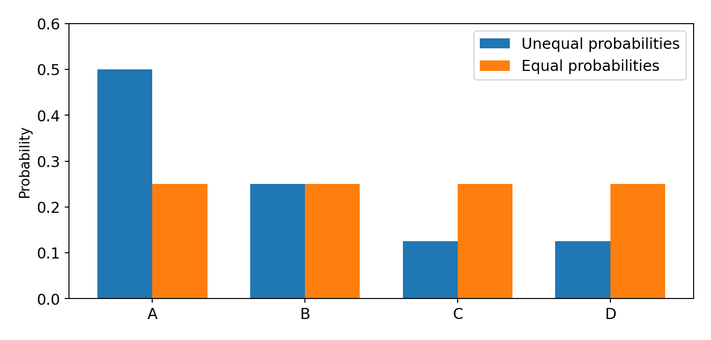
Fig. 287 هیستوگرام چهارنمادی نمونه (نوارهای یک سمت) در مقایسه با حالت هماحتمال. هر دو چهار نماد دارند، ولی توزیع احتمال و در نتیجه آنتروپیشان یکسان نیست.#
۸.۲.۴ — چه زمانی آنتروپی کمینه یا بیشینه است؟#
برای یک الفبای \(L\) نمادی، وقتی همه نمادها هماحتمال باشند:
برای مثال، اگر ۲۵۶ سطح شدت با احتمال مساوی رخ دهند، \(H=8\) بیت/پیکسل است؛ اگر کل تصویر فقط یک مقدار ثابت داشته باشد، \(H=0\) میشود. در مورد تصویر دودویی با احتمال روشن بودن \(p\):

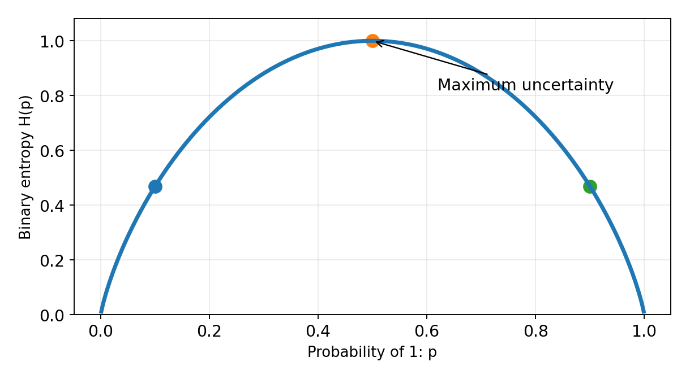
Fig. 288 آنتروپیِ یک پیکسل دودویی. در \(p=0.5\) بیشترین عدم قطعیت داریم؛ در \(p\) نزدیک صفر یا یک، مقدار بعدی آسانتر پیشبینی میشود.#

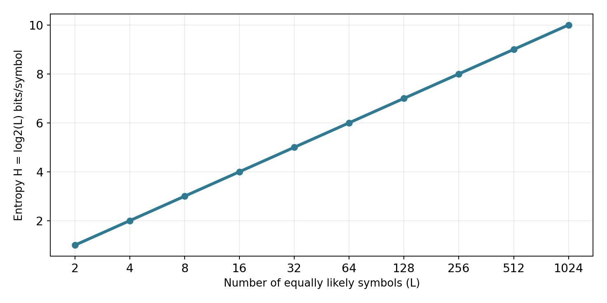
Fig. 289 اگر نمادها هماحتمال باشند، با زیاد شدن تعداد نمادهای ممکن از ۲ به ۴، ۸ و ۲۵۶، آنتروپی بهترتیب ۱، ۲، ۳ و ۸ بیت در هر نماد میشود. این نتیجه فقط برای حالت هماحتمال است.#
۸.۲.۵ — نکته مهم: آنتروپی پیکسلی همه داستان نیست#
دو تصویر ممکن است هیستوگرام کاملاً یکسان داشته باشند؛ پس آنتروپی تکپیکسلی آنها نیز یکسان است. ولی یکی میتواند از دو ناحیه بزرگ سیاه و سفید تشکیل شده باشد، و دیگری پیکسلهای سیاه و سفید پراکنده و تقریباً تصادفی داشته باشد.
در تصویر اول، اگر پیکسل سمت چپ سفید است، پیکسل بعدی نیز احتمالاً سفید است؛ بنابراین از همسایگی پیکسلها میتوان اطلاعات بیشتری گرفت. در تصویر تصادفی چنین پیشبینیای دشوارتر است.

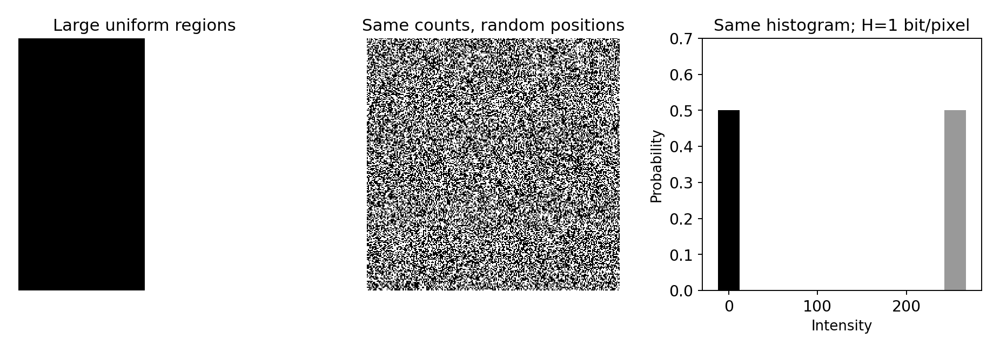
Fig. 290 دو تصویر با تعداد پیکسل سیاه و سفید یکسان و آنتروپی پیکسلی برابر یک بیت/پیکسل؛ اما ساختار مکانی بسیار متفاوت. این تفاوت را یک فشردهساز مجهز به پیشبینی یا تشخیص تکرارهای مکانی میتواند به کار گیرد.#
پس آنتروپی هیستوگرام، یک معیار درباره توزیع شدتهاست، نه بیان کامل همه قابلیت فشردهسازی تصویر. روشهای پیشرفتهتر از وابستگی مکانی و زمینه هم استفاده میکنند. در زبان نظری، میتوان آنتروپی شرطی یا مدلهای پیشبینی را مطالعه کرد؛ فعلاً درک همین تفاوت کافی است.
۸.۳ — از آنتروپی به نخستین فشردهسازی واقعی: هافمن#
۸.۳.۱ — ایده یک خطی هافمن#
در یک کد با طول ثابت، به همه نمادها به یک اندازه بیت اختصاص میدهیم. ولی وقتی بعضی نمادها پرتکرارتر هستند، میتوان نماد پرتکرار را کوتاهتر و نماد کمتکرار را بلندتر نوشت؛ به شرطی که بازکردن کد همچنان بدون ابهام باشد.
هافمن همین کار را انجام میدهد. این روش یک کد بدون اتلاف است: اگر کد و اطلاعات لازم برای بازکردن آن موجود باشند، تمام نمادها دقیقاً به همان ترتیب اولیه بازیابی میشوند. [S1، S2]
۸.۳.۲ — مراحل الگوریتم با زبان ساده#
تعداد وقوع هر مقدار شدت را میشماریم.
دو نماد (یا گره) کمتکرارتر را انتخاب میکنیم و آنها را به یک گره جدید متصل میکنیم.
احتمال یا فراوانی گره جدید برابر مجموع آن دو است.
این کار را ادامه میدهیم تا یک درخت تشکیل شود.
به شاخههای چپ و راست برچسبهای ۰ و ۱ میدهیم.
کد هر نماد، رشته صفر و یک از ریشه درخت تا برگ آن است.

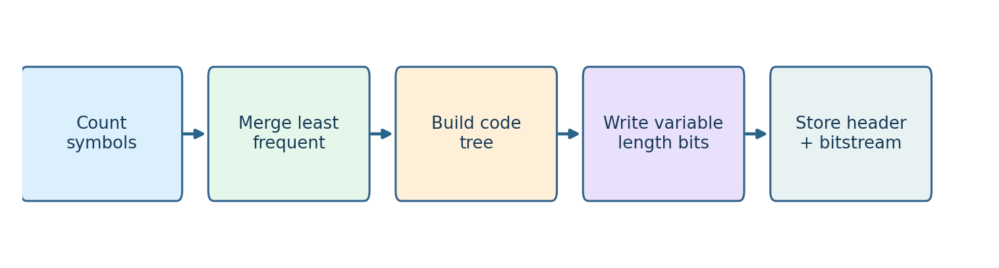
Fig. 291 فلوچارت مراحل اصلی هافمن. بخش «سرآیند» برای آن اضافه شده که تفاوت بین طول نظری کد و حجم فایل واقعی فراموش نشود.#
۸.۳.۳ — ساخت درخت برای تصویر چهارشدتی#
چهار احتمال ما عبارتاند از \(0.5,0.25,0.125,0.125\). ابتدا دو احتمال کوچک \(0.125\) را به هم متصل میکنیم و به \(0.25\) میرسیم. سپس آن گره را با گره \(0.25\) دیگر ترکیب میکنیم تا احتمال \(0.5\) حاصل شود. در آخر آن را به گره اولیه \(0.5\) متصل میکنیم.

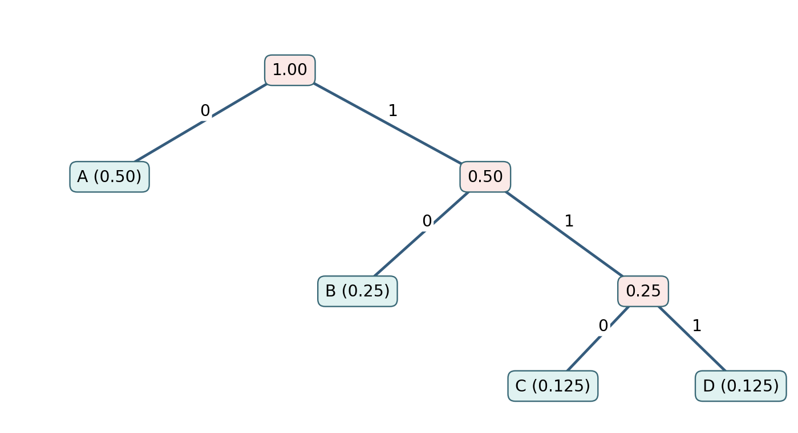
Fig. 292 درخت آموزشی هافمن. از ریشه به سمت نماد بروید و صفر/یکِ روی شاخهها را کنار هم قرار دهید. این شکل دقیقاً با فراوانی مثال ما ساخته شده است.#
یکی از پاسخهای معتبر برای کدها چنین است (در جابهجایی شاخههای هماحتمال، کدها ممکن است متفاوت شوند ولی میانگین طول ثابت بماند):
مقدار شدت |
نماد |
کد |
طول |
|---|---|---|---|
\(0\) |
A |
|
۱ بیت |
\(85\) |
B |
|
۲ بیت |
\(170\) |
C |
|
۳ بیت |
\(255\) |
D |
|
۳ بیت |
میانگین طول کد:
نتیجه عددی برای ۶۴ پیکسل:
کد ثابتِ چهار نمادی: \(64\times2=128\) بیت.
کد هافمن: \(32\times1+16\times2+8\times3+8\times3=112\) بیت.
صرفهجویی فقط در رشته بیت کدشده: \(16\) بیت، یعنی \(12.5\%\) نسبت به کد ثابت دو بیتی.
اگر آن ۶۴ مقدار شدت را در آرایه خامِ ۸بیتی ذخیره کنیم، داده خام \(64\times8=512\) بیت است؛ اما برای مقایسه منصفانه با کد ثابت دو بیتی باید هزینه معرفی چهار سطح شدت و شیوه ذخیره را هم در نظر بگیریم. کاهش از ۵۱۲ به ۱۱۲ بیت به معنی نسبت فشردهسازی یک فایل کامل و استاندارد نیست.
۸.۳.۴ — چرا کدهای هافمن را میتوان بدون جداکننده خواند؟#
فرض کنید دنباله شدتها 0, 85, 0, 255 باشد. با جدول بالا به ترتیب کدها را کنار هم میگذاریم:
0 | 10 | 0 | 111 → 0100111
برای بازکردن، از چپ پیش میرویم: 0 بلافاصله A است، 10 برابر B، 0 برابر A و 111 برابر D. هیچ کدی، ابتدای یک کد طولانیتر نیست؛ به این ویژگی Prefix-free میگوییم. بنابراین مرز نمادها بدون درج فاصله قابل تشخیص است.
محدودیت مهم: گیرنده باید درخت یا جدول کد را بداند. پس اگر فایل ذخیره میکنیم، معمولاً اطلاعاتی دربارهٔ کدها یا مدل لازم است؛ هزینه این اطلاعات نیز جزو حجم فایل است.
۸.۳.۵ — حجم واقعی فایل و نسبت فشردهسازی#
در این روابط باید دو اندازه قابل مقایسه را برحسب یک واحد (مثلاً بایت) قرار دهیم. اگر یک تصویر از ۱۰۰ کیلوبایت به ۲۵ کیلوبایت برسد، نسبت فشردهسازی \(4:1\) و صرفهجویی حجمی \(75\%\) است.
تفاوت بایت و بیت: هر بایت هشت بیت است. وقتی کد هافمن تعداد فردی بیت تولید کند، برای ذخیره در فایل باید آخرین بایت با چند بیت اضافی پر شود؛ همچنین طول معتبر بیتها، شکل تصویر و اطلاعات درخت باید نگهداری شوند.

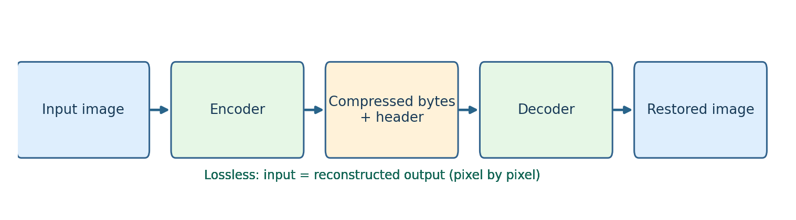
Fig. 293 در فشردهسازی بدون اتلاف، پس از رمزگشایی پیکسلهای بازسازیشده دقیقاً با پیکسلهای ورودی برابرند. خود فایل فشرده لزوماً کوچکتر از داده اولیه نیست.#
۸.۳.۶ — کد اجرایی خیلی کوتاه: شمارش آنتروپی#
این مثال فقط از کتابخانه استاندارد Python استفاده میکند:
from collections import Counter
from math import log2
pixels = [0]*32 + [85]*16 + [170]*8 + [255]*8
counts = Counter(pixels)
n = len(pixels)
H = -sum((c/n) * log2(c/n) for c in counts.values())
print(f"Entropy = {H:.2f} bits/pixel") # 1.75
کد کامل ساخت درخت هافمن و بازیابی بدون اتلاف را در فایل دانلودی پایین همین جزوه گذاشتهایم. در آن فقط تعداد بیتهای بدنه چاپ نمیشود؛ یک فایل آموزشی واقعی با سرآیند و جدول کد نیز ساخته میشود.
نکته نرمافزاری: فایل HF08 تولیدشده توسط کد، قالبی ساده برای آموزش است؛ PNG، JPEG یا WebP نیست. این مرز میان «نمایش ایده فشردهسازی» و «پیادهسازی یک استاندارد صنعتی» باید روشن باشد.
۸.۴ — از هافمن تا یک قالب واقعی و پرکاربرد: WebP#
اکنون با یک مسئله واقعی روبهرو میشویم: استاد میخواهد تصاویر درس را در سایت قرار دهد؛ عکس، اسکرینشات، شکل و نمودار. اگر حجم تصاویر زیاد باشد، بارگذاری صفحات کند میشود و اینترنت بیشتری مصرف میشود. یک فرمت فشردهسازی کاربردی مانند WebP راهحل مهمی برای بسیاری از این تصاویر است.
وبپی یک فرمت تصویر است که میتواند تصویر را بدون اتلاف (Lossless) یا با اتلاف کنترلشده (Lossy) ذخیره کند و از شفافیت و انیمیشن هم پشتیبانی دارد. این ویژگیها در مشخصات استاندارد IETF، مستندات Google و راهنمای MDN تصریح شدهاند. [S3، S4، S5]

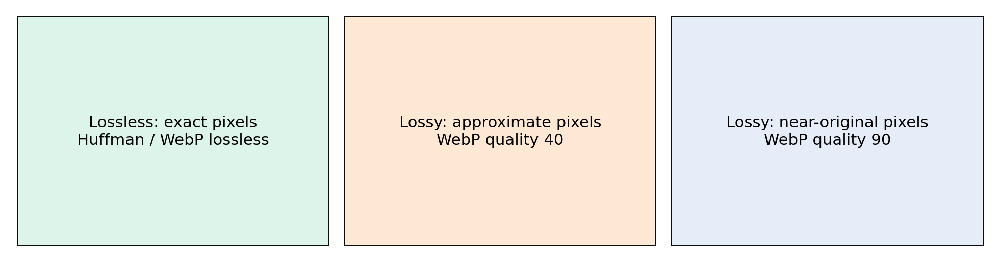
Fig. 294 تفاوت دو انتخاب در WebP: در حالت بدون اتلاف اعداد پیکسلها دقیقاً برمیگردند؛ در حالت با اتلاف مقداری از جزئیات کنار گذاشته میشود تا فایل کوچکتر شود.#
۸.۴.۱ — WebP بدون اتلاف: ادامه طبیعی بحث هافمن#
در حالت Lossless، فشردهساز تلاش میکند الگوهای تکراری را پیدا کند و بهجای ذخیره تکراری تمام دادهها، اطلاعات را با توصیف فشردهتری نگه دارد. طبق استاندارد RFC 9649، الگوریتم بدون اتلاف WebP از ایدههای تکرارهای پیشین (LZ77)، کدگذاری هافمن و کش رنگ استفاده میکند. [S3]
به زبان دانشجویی:
برخی بخشها را میشود با «این قسمت شبیه قسمت قبلی است» توصیف کرد.
پس از تبدیل داده به نمادها، برای نمادهای رایج کدهای کوتاهتری به کار میرود.
هنگام بازکردن فایل، تمام پیکسلها دقیقاً بازسازی میشوند.
نیازی نیست در این درس پیادهسازی کامل LZ77 یا ساختار پیچیده فایل WebP را بنویسیم؛ هافمن را واقعاً کدنویسی میکنیم تا فلسفه کدگذاری مشخص باشد، و سپس WebP را با کتابخانه استانداردِ کاربردی آزمایش میکنیم.
۸.۴.۲ — WebP با اتلاف: چرا اجازه میدهیم بعضی عددها تغییر کنند؟#
وقتی عکس منظره را در اندازه معمول میبینید، ممکن است حذف بخشی از تفاوتهای بسیار کوچکِ رنگی یا جزئیات ریز برای چشم چندان محسوس نباشد. WebP در حالت Lossy از یک روش مبتنی بر پیشبینی و فناوری VP8 استفاده میکند. تصویر به بلوکهایی تقسیم میشود، اطلاعات قابل پیشبینی بهصرفهتر نمایش داده میشود و کنترل شدت کاهش دقت بر حجم و کیفیت اثر میگذارد. [S3، S4]

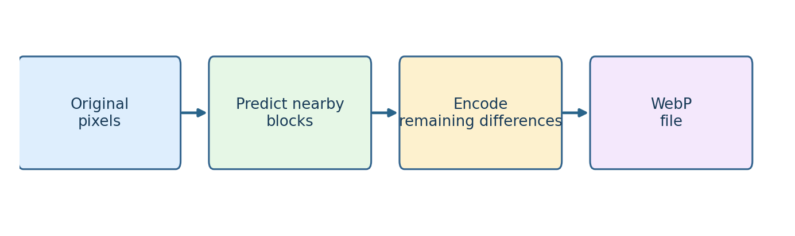
Fig. 295 ایده سادهشده پیشبینی در فشردهسازی با اتلاف WebP: اگر بتوان یک بخش را از بخشهای اطراف حدس زد، ذخیرهٔ اطلاعات باقیمانده میتواند کمهزینهتر باشد. این شکل، نمودار کامل استاندارد VP8 نیست.#
در یک تصویر طبیعی، در ناحیه آسمان معمولاً رنگ پیکسلهای مجاور نزدیک است. کدگذار میتواند از همین شباهت بهره ببرد. اما در لبه یک نوشته یا خط نازک، کوچکترین تغییر ممکن است از نظر بصری مهم باشد. از این رو بهترین تنظیمات برای عکس و نمودار یکسان نیستند.
۸.۴.۳ — quality یعنی چه؟#
در کدگذاری WebP با اتلاف، پارامتر quality معمولاً عددی میان صفر و صد است. این عدد درصد کیفیت تصویر بازسازیشده نیست و تضمین نمیکند اگر آن را از ۵۰ به ۸۰ ببریم، حجم دقیقاً با نسبت مشخصی زیاد شود. فقط یک تنظیم داخلی برای مبادله میان حجم و کیفیت است.
مقدار پایینتر: معمولاً فایل کوچکتر و احتمال اعوجاج بیشتر.
مقدار بالاتر: معمولاً جزئیات بیشتر و فایل بزرگتر.
گزینه
lossless=True: پیکسلهای بازشده دقیقاً برابر ورودی خواهند بود؛ در این حالت آزمایش Lossless را با آزمایشهای کیفیت Lossy مخلوط نمیکنیم.
۸.۴.۴ — نمونه تصویری واقعیِ همین بسته#
برای اینکه از تصویر ناشناس در وب استفاده نکنیم، یک صحنه مصنوعی اصیل شامل آسمان، کوه، خانه و جاده تولید کردهایم. این صحنه را با کیفیتهای مختلف WebP و همچنین در قالب PNG نگه میداریم و حجم فایل را واقعاً اندازه میگیریم.

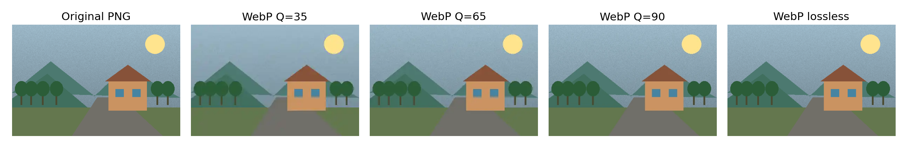
Fig. 296 یک ورودی یکسان در PNG، سه کیفیت مختلف WebP و WebP بدون اتلاف. روی صفحه، کاهش حجم ممکن است بسیار بیشتر از کاهش کیفیت ظاهری به نظر برسد؛ اما قضاوت کیفیت به بزرگنمایی و نوع محتوای تصویر وابسته است.#
مقادیر زیر نتیجه اجرای واقعی کد تولید همین بسته هستند، نه نتیجهای نقلشده از وب:
نوع فایل |
اندازه اندازهگیریشده |
ویژگی |
|---|---|---|
PNG بدون اتلاف |
121,656 بایت |
بازسازی دقیق پیکسلها |
WebP کیفیت ۳۵ |
2,242 بایت |
با اتلاف؛ جزئیات کمتر |
WebP کیفیت ۶۵ |
4,870 بایت |
با اتلاف؛ تعادل نمونه |
WebP کیفیت ۹۰ |
22,948 بایت |
با اتلاف؛ جزئیات بیشتر |
WebP بدون اتلاف |
61,846 بایت |
بازسازی دقیق پیکسلها |
توجه کنید: این نسبتها فقط به تصویر مصنوعی بالا و تنظیمات همین آزمایش مربوطاند و برای همه عکسها ثابت نیستند. همچنین کیفیت ۸۰ در JPEG و کیفیت ۸۰ در WebP، معیار ادراکی یکسان و تضمینشدهای نیستند.

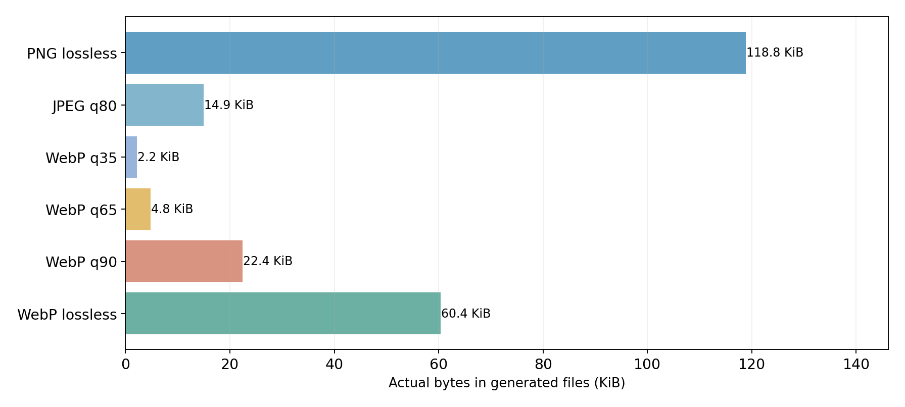
Fig. 297 حجم واقعی فایلهای ساختهشده از یک تصویر: نمودار برای همان ورودی و شرایط یکسان تولید شده است. ستون JPEG صرفاً معیار مقایسه تجربی است و وارد جزئیات الگوریتم JPEG نمیشویم.#
۸.۴.۵ — اندازه فقط یک معیار است؛ خطا را هم بسنجیم#
فرض کنید \(f(x,y,c)\) مقدار یک مؤلفهٔ رنگ در ورودی و \(\hat f(x,y,c)\) مقدار متناظر در تصویر بازسازیشده باشد. اگر \(K\) تعداد کل مؤلفههای رنگی/شدت مورد مقایسه باشد، خطای میانگین مربعات چنین است:
اگر دو تصویر پس از بازکردن فایل در تمام پیکسلها برابر باشند، \(\mathrm{MSE}=0\). اگر با اتلاف باشند، معمولاً خطا غیرصفر است. برای تصویر ۸بیتی، معیار پرکاربرد PSNR نیز از همین خطا ساخته میشود:
هرچه PSNR بالاتر باشد، بر اساس این معیار عددی، تصویر بازسازیشده به تصویر ورودی نزدیکتر است. اگر MSE صفر باشد PSNR بهصورت نظری بینهایت است. PSNR شاخص کامل کیفیت ادراکی انسان نیست؛ ممکن است دو تصویر با PSNR نزدیک، از دید چشم متفاوت باشند.

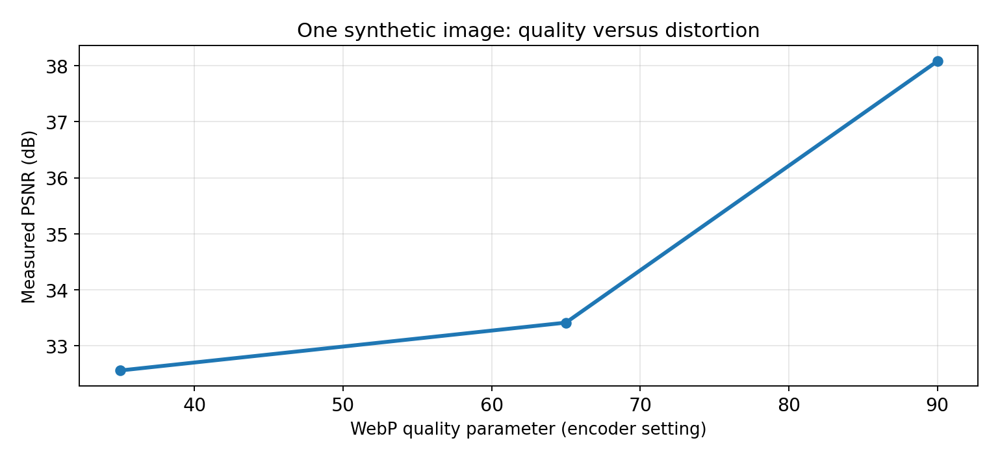
Fig. 298 مقدار PSNR در آزمایش همین تصویر مصنوعی با افزایش پارامتر کیفیت WebP. روندِ مشاهدهشده مختص همین داده و تنظیمات است.#

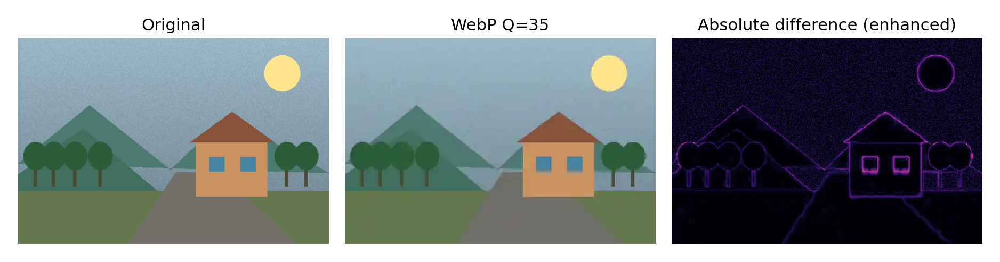
Fig. 299 در نقشه سمت راست، تفاوت قدرمطلق پیکسلهای ورودی و خروجی نمایش داده شده است. روشن بودن تصویر اختلاف به این معنا نیست که خروجی الزاماً از نظر انسانی همانقدر بد دیده میشود؛ فقط نشان میدهد تغییر عددی در کجا رخ داده است.#
۸.۴.۶ — چند خط Python برای آزمایش WebP#
این برنامه برای اجرا به Pillow نیاز دارد. اگر روی رایانه Python 3.12 و Pillow نصب باشد، به کتابخانههای سنگینتری مانند scikit-image یا SciPy نیاز نداریم:
from PIL import Image
img = Image.open("input.png").convert("RGB")
img.save("photo_small.webp", format="WEBP", quality=55)
img.save("photo_exact.webp", format="WEBP", lossless=True)
restored = Image.open("photo_exact.webp").convert("RGB")
assert img.tobytes() == restored.tobytes()
print("Lossless reconstruction is exact")
اگر عکس شخصی در اختیار ندارید، فایلهای نمونهٔ همین بسته را بگیرید؛ همچنین کد اجرایی مستقل، تصویر آزمایشی را خودش میسازد:


کافی است فایل Python را اجرا کنید. بدون ورودی، یک نمونه تصویری تولید میکند؛ اگر مسیر یک عکس را پس از نام برنامه بدهید، همان عکس را آزمایش میکند. اندازه فایل و PSNR چاپ میشوند.
۸.۵ — در سایت آموزشی کدام گزینه بهتر است؟#
انتخاب قالب فایل را باید به ماهیت تصویر وابسته کنیم:
نوع محتوا |
پیشنهاد برای شروع |
چرا؟ |
|---|---|---|
عکسهای معمولی کلاس یا طبیعت |
WebP با اتلاف و آزمایش چند کیفیت |
کاهش حجم ممکن است بدون افت محسوس برای نیاز مورد نظر حاصل شود |
شکل علمی با نوشتههای ریز |
PNG یا WebP بدون اتلاف |
تغییر چند پیکسل میتواند خوانایی متن و خطوط را کاهش دهد |
نمودار با خطوط و محورهای دقیق |
SVG در صورت امکان، یا PNG/WebP بدون اتلاف |
حفظ دقت لبه و نوشته اهمیت دارد |
ماسک صفر و یک که بعداً تحلیل عددی میشود |
ذخیره بدون اتلاف |
تغییر یک پیکسل ممکن است نتیجه الگوریتم را عوض کند |
این توصیهها با راهنمای رسمی MDN درباره انتخاب فرمت تصویر و تفاوت فایلهای بااتلاف و بدوناتلاف سازگارند. [S5]

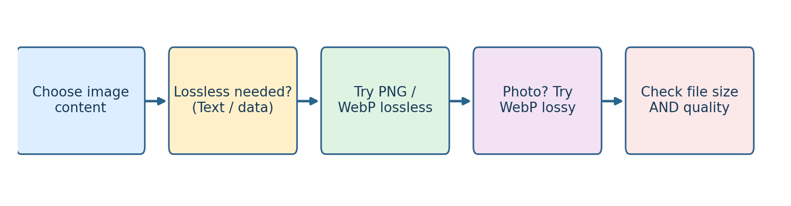
Fig. 300 راهنمای ساده تصمیمگیری درباره تصاویر سایت؛ معیار نهایی همیشه مشاهده نتیجه، اندازهگیری حجم و توجه به نوع استفاده است.#
سؤال کاربردی: آیا بهتر است برای سایت تمام تصاویر را بدون بررسی به WebP با کیفیت ۳۰ تبدیل کنیم؟ خیر. برای تصویر دارای نوشته، عدد و خط باریک ممکن است اعوجاج کوچک باعث تغییر مفهوم علمی شود. در مقابل برای یک عکس تزیینی، تنظیم دیگری مناسبتر است.
۸.۶ — یک آزمایش بسیار مهم: دو تصویر با آنتروپی یکسان#
اکنون به شکل بخش ۸.۲.۵ برگردید. تصاویر «بلوکهای بزرگ» و «پیکسلهای پراکنده» را با دو دستور زیر در نظر بگیرید:
from collections import Counter
import math
def H(values):
counts = Counter(values)
n = len(values)
return -sum((c/n)*math.log2(c/n) for c in counts.values())
structured = bytes([0]*64 + [255]*64) * 128
print(H(structured)) # 1.0 bit/pixel
اگر همان ۱۶٬۳۸۴ مقدار را فقط جابهجا کنیم، فراوانی سیاه و سفید عوض نمیشود، پس آنتروپی پیکسلی تغییر نمیکند. اما ترتیب مکانی متفاوت میشود و فشردهسازی واقعی ممکن است خروجی دیگری بدهد. این همان نقطهای است که «اندازهگیری اطلاعاتِ تنها یک پیکسل» به «مدلکردن ساختار تصویر» میرسد.
در آزمایشگاه همراه، همین موضوع با داده اصیل قابل آزمودن است.
۸.۷ — چهار خطای مفهومی که باید از آنها پرهیز کنیم#
خطای اول: «آنتروپی ۱٫۷۵ یعنی حجم فایل دقیقاً ۱٫۷۵ بیت بر پیکسل است.» نادرست است. آنتروپی کمیت آماریِ توزیع است. کدبوک، طول بیت معتبر، بستهبندی بایتی، قالب فایل و وابستگیهای مکانی بر حجم فایل اثر دارند.
خطای دوم: «اگر آنتروپی کم است، یک عکس حتماً با هر الگوریتمی عالی فشرده میشود.» نادرست است. الگوریتم باید بتواند نظم موجود را کشف کند؛ همچنین کوچک بودن اندازه داده میتواند هزینه سرآیند را غالب کند.
خطای سوم: «WebP همیشه از PNG و JPEG کوچکتر است.» نادرست است. عملکرد به تصویر، تنظیمات، فرمت مبنا و معیار کیفیت بستگی دارد. اعداد مقایسهای عمومی را نباید تضمینِ همه تصاویر دانست.
خطای چهارم: «فشردهسازی با اتلاف، همان فشردهسازی با مقدار آنتروپی بیشتر است.» نادرست است. در فشردهسازی بااتلاف، داده ورودی عمداً تقریب زده میشود و سپس میتوان آن تقریب را فشرده کرد؛ باید خطا را جداگانه بسنجیم.
۸.۸ — آزمایشگاه، تمرین و پرسشهای مرور#
آزمایشگاه ۱: محاسبه اطلاعات تصویر#
ابتدا تصویر ۸×۸ این فصل را بسازید و هیستوگرام آن را محاسبه کنید. برای چهار مقدار \(0,85,170,255\)، احتمالها را به دست بیاورید. سپس مقدار \(H\) را یک بار دستی و یک بار با کد محاسبه کنید. باید به \(1.75\) برسید.
آزمایشگاه ۲: هافمن، از نماد تا بیت و بازگشت#
با کدهای
0،10،110و111دنباله0,85,0,255را رمز کنید؛ پاسخ باید0100111باشد.آن را دوباره رمزگشایی کنید و با ورودی مقایسه کنید.
نسبت طول بدنه کد به کد ثابت دو بیتی را محاسبه کنید.
بررسی کنید چرا فایل واقعی آموزشیِ دارای سرآیند ممکن است برای داده کوچک، از خود داده بزرگتر شود.
آزمایشگاه ۳: کاربرد امروزی در وب#
با یک تصویر دلخواه، WebP با کیفیتهای \(35\), \(65\), \(90\) و WebP بدون اتلاف را بسازید. جدول اندازه فایلها را پر کنید. سپس تصویر بازشده را با ورودی مقایسه کنید. آیا کاهش حجم همیشه به یک اندازه بر ظاهر عکس و شکل آموزشی اثر دارد؟
تمرینهای مفهومی#
اگر تصویر خاکستری فقط یک مقدار شدت داشته باشد، چرا آنتروپی پیکسلی آن صفر است؟ آیا حجم فایل نهایی نیز صفر خواهد بود؟
چرا یک مقدار شدت با احتمال \(1/16\)، اطلاعات بیشتری از مقداری با احتمال \(1/2\) دارد؟ مقدار هرکدام را حساب کنید.
چهار شدت با احتمالهای \(1/4\) داریم. آیا هافمن نسبت به کد ثابت دو بیتی میتواند در طول متوسط کدهای تکنمادیِ دودویی صرفهجویی کند؟
اگر پیکسلهای یک تصویر را بیآنکه مقدارشان عوض شود فقط تصادفی جابهجا کنیم، چه چیزی درباره آنتروپی هیستوگرام ثابت میماند؟ درباره حجم WebP چه میتوان گفت؟
تصویر علمی با نوشته ریز را برای انتشار وب دارید. حالت بااتلاف یا بدون اتلاف را ابتدا آزمایش میکنید؟ چرا؟
اگر خروجی WebP بااتلاف \(\mathrm{MSE}=0\) داشته باشد، چه نتیجهای میگیرید؟ آیا «با اتلاف بودن قالب» الزاماً به معنی تفاوت در تکتک تصاویر است؟
چرا مقایسه PNG و WebP تنها با تنظیم عدد
quality=80معیار منصفانهای برای «کیفیت برابر» نیست؟
پاسخ راهنمای سه تمرین نخست#
۱. چون مقدار هر پیکسل با قطعیت قابل پیشبینی است، اطلاعات غافلگیرکنندهای ندارد؛ اما فایل واقعی به قالب و متاداده نیاز دارد، پس صفر بایت نمیشود. ۲. برای \(1/16\) چهار بیت و برای \(1/2\) یک بیت است. ۳. خیر، برای چهار نماد هماحتمال، میانگین دو بیت برای کد هافمن بهینه است.
فایلهای همراه فصل#
این فایلها از اینترنت چیزی دانلود نمیکنند و به هیچ تنظیم تازهای در Jupyter Book، سایت یا CMD نیاز ندارند. بسته کدهای قابل دانلود را نیز میتوان جداگانه نزد خود نگه داشت.
۸.۹ — جمعبندی به زبان ساده#
اگر بخواهیم تمام فصل را در چند جمله خلاصه کنیم:
آنتروپی میپرسد: «با توجه به فراوانی مقدارهای شدت، دیدن یک مقدار جدید چقدر غیرمنتظره است؟»
هافمن میگوید: «به مقدارهای پرتکرار، کد کوتاهتر بده تا متوسط تعداد بیتها کم شود.»
هافمن بدون اتلاف است؛ اما برای یک فایل واقعی باید جدول کد و اطلاعات لازم برای بازکردن نیز ذخیره شود.
هیستوگرام و آنتروپی پیکسلی، نظم مکانی پیکسلها را بهتنهایی نمیبینند.
WebP نشان میدهد ایدههای فشردهسازی در یک قالب واقعی امروزی چگونه به کار میآیند؛ در حالت Lossless بازسازی دقیق است و در حالت Lossy باید کیفیت را هم ارزیابی کرد.
مهمترین نتیجه برای دانشجو: «اطلاعات تصویر» یک مفهوم آماری است؛ «فشردهسازی» عملیاتی برای نمایش کمحجمتر داده است؛ و «کیفیت تصویر» پرسشی جداگانه است که فقط در مسئلهٔ اتلاف اطلاعات مطرح میشود.
۸.۱۰ — منابع علمی و فنی#
[S1] کتاب پایه درس: Rafael C. Gonzalez and Richard E. Woods, Digital Image Processing, 4th ed., Chapter 8, sections on fundamentals, measuring image information, and Huffman coding. بخشهایی مانند سایر روشهای کدگذاری و واترمارکینگ عمداً در برنامه آموزشی این نسخه انتخاب نشدهاند.
[S2] مبنای تعریف آنتروپی: NIST Computer Security Resource Center, Entropy — Glossary. صفحه معتبر تعریف آنتروپی. این منبع تعریف ریاضی عمومی را تأیید میکند؛ کاربرد در تصویر از S1 پیروی میکند.
[S3] استاندارد رسمی WebP: IETF, RFC 9649: WebP Image Format (2024). متن استاندارد. تمایز حالت بااتلاف و بدوناتلاف، و کاربرد LZ77 و Huffman در WebP بدون اتلاف در این سند مشخص شده است.
[S4] مستندات سازنده WebP: Google for Developers, An image format for the Web. مرجع معرفی WebP، فشردهسازی Lossy/Lossless و سازوکار پیشبینی.
[S5] راهنمای انتخاب فرمت برای وب: Mozilla Developer Network (MDN), Image file type and format guide. مرجع کاربرد PNG، JPEG، WebP و انتخاب Lossless/Lossy برای انواع محتوا.
یادداشت اصالت، دامنه و قابلیت بازتولید#
تمام نمودارها، فلوچارتها، نمونهها و تصاویر آموزشی این بسته از نو تولید شدهاند و تصویرِ استخراجشده از صفحات کتاب در بسته عمومی وجود ندارد. مقادیر اندازه فایل و PSNR در جدولها مربوط به تصویر ساختگی همین بسته است و جای نتایج پژوهشی یا مقایسه فراگیر فرمتها را نمیگیرد. کدهای آموزشی و Notebook همراه برای بازتولید آزمایشها فراهماند.